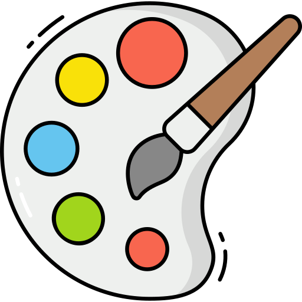

The Arts stream provides a wide range of subjects that cultivate creative and intellectual thinking. These disciplines equip students with the tools to excel in various fields, including literature, history, languages, psychology, and more. Below are some of the key fields of study under the Arts stream:
The Key Differences Between Arts and Other Streams:
- Focus on Creativity: Arts emphasizes creativity, critical thinking, and conceptual skills, unlike more technical or scientific fields.
- Career Path Flexibility: Arts students have diverse career opportunities in fields such as writing, design, journalism, teaching, social work, and research.
- Broad Range of Subjects: Students can choose from a variety of subjects that span history, politics, sociology, philosophy, and more.
Here are some of the major branches available in Arts programs:

📚 Literature
Literature involves the study of written works, including novels, poetry, drama, and prose across cultures and time periods.
- Literary Criticism
- Poetry Analysis
- World Literature
- Drama Studies
🏺 History
History focuses on understanding past events, societies, and cultures to better comprehend the present and future.
- Ancient Civilizations
- Modern History
- World Wars
- Historical Research Methods
⚖️ Political Science
Political science examines systems of governance, political behavior, international relations, and the theory and practice of politics.
- Political Theory
- International Relations
- Public Policy
- Political Philosophy

🧠 Psychology
Psychology studies the human mind, behavior, mental processes, and how individuals relate to their environment.
- Cognitive Psychology
- Developmental Psychology
- Clinical Psychology
- Behavioral Science
👥 Sociology
Sociology explores society, social institutions, and human behavior in relation to cultural, economic, and political forces.
- Social Theory
- Research Methods
- Social Movements
- Cultural Sociology
💭 Philosophy
Philosophy delves into the fundamental nature of knowledge, reality, and existence, encouraging critical thinking and ethical reasoning.
- Ethics
- Metaphysics
- Logic
- Philosophy of Mind

🎨 Fine Arts
Fine arts encompasses the visual arts such as painting, sculpture, and drawing, along with other forms of creative expression.
- Painting
- Sculpture
- Digital Art
- Art History

🎶 Music
Music studies the theory, history, and performance of music, focusing on both classical and contemporary styles.
- Music Theory
- Music Composition
- Music History
- Performance Art
📰 Journalism
Journalism involves reporting, writing, and analyzing news, providing a crucial service to society through information dissemination.
- News Writing
- Broadcast Journalism
- Investigative Reporting
- Digital Media